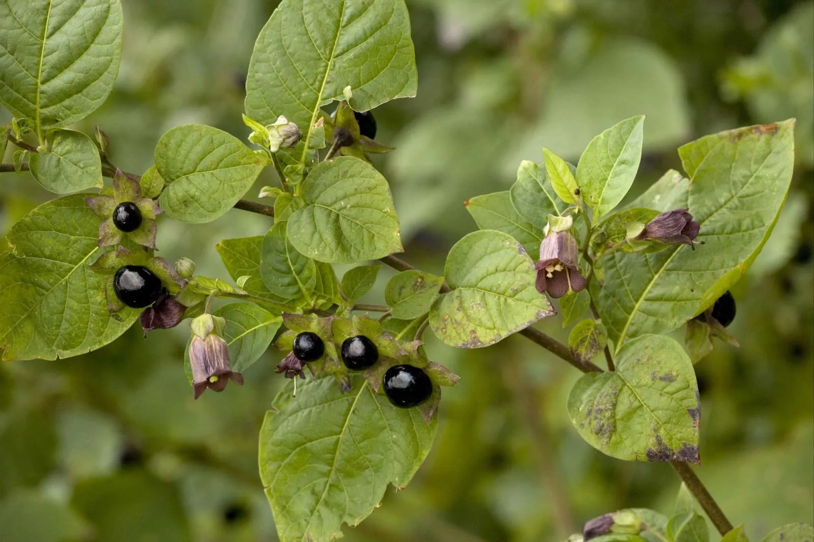

Belladonna
Belladonna, (Atropa belladonna), also called deadly nightshade, is a tall bushy herb of the nightshade family (Solanaceae)
The source of the crude drug of the same name. The highly poisonous plant is a native of wooded or waste areas in central and southern Eurasia. It grows to about 1.5 metres (4-5 feet) tall and has dull green leaves, violet or greenish flowers in the axils of the leaves or in the forks of branches, sweet shiny black berries about the size of cherries, and a large tapering root.
The active agents in belladonna, atropine, hyoscine (scopolamine), and hyoscyamine, have anticholinergic properties.The symptoms of belladonna poisoning include dilated pupils, sensitivity to light, blurred vision, tachycardia, loss of balance, staggering, headache, rash, flushing, severely dry mouth and throat, slurred speech, urinary retention, constipation, confusion, hallucinations, delirium, and convulsions.
In 2009, belladonna berries were mistaken for blueberries by an adult woman; the six berries she ate were documented to result in severe anticholinergic syndrome. The plant's deadly symptoms are caused by atropine's disruption of the parasympathetic nervous system's ability to regulate involuntary activities, such as sweating, breathing, and heart rate. The antidote for belladonna poisoning is an anticholinesterase (such as physostigmine) or a cholinomimetic (such as pilocarpine), the same as for atropine.
The common name belladonna originates from its historic use by women, as bella donna is Italian for "beautiful woman". Drops prepared from the belladonna plant were used to dilate women's pupils, an effect considered to be attractive and seductive.
For further information, please visit these sites!
https://www.britannica.com/plant/belladonna
https://en.wikipedia.org/wiki/Atropa_belladonna
https://www.ncbi.nlm.nih.gov/pmc/articles/PMC3361210/
https://www.woodlandtrust.org.uk/trees-woods-and-wildlife/plants/wild-flowers/deadly-nightshade/